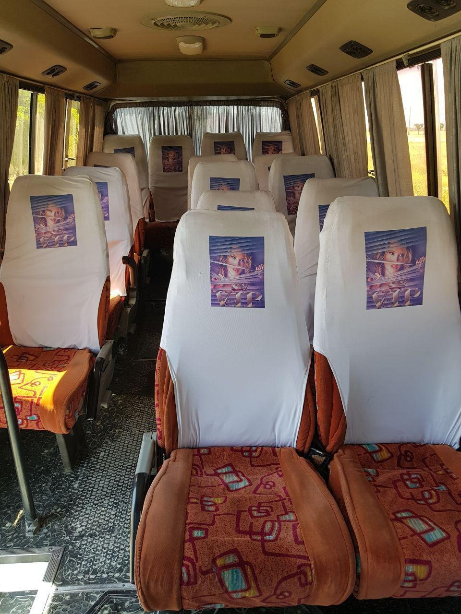
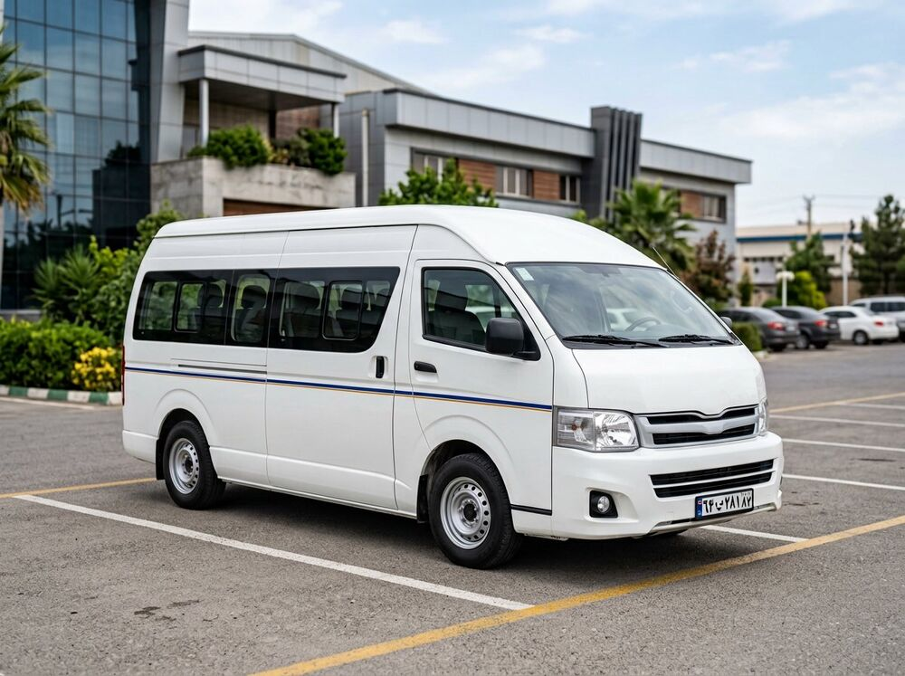

خودروی متناسب
بر اساس تعداد مسافر و نوع برنامه، اتوبوس، مینیبوس یا ون مناسب پیشنهاد میشود.
برای جابهجایی مدیران، مهمانان و گروههای سازمانی، سرویسهای درونشهری و VIP را با تمرکز بر زمانبندی، آسایش و هماهنگی ارائه میکنیم.

راهکار اجرایی باید با واقعیت مجموعه شما هماهنگ باشد؛ نه یک نسخه یکسان برای همه.
جلسه کاری، جابهجایی مهمان، بازدید صنعتی یا انتقال گروه کوچک مدیران، هرکدام به سطح متفاوتی از برنامهریزی نیاز دارند. قزوین تصویر برای این موقعیتها، خدمت حملونقل را با توجه به تعداد مسافر، زمان و سطح انتظار شما تعریف میکند.
برای سرویسهای VIP میتوان جزئیات سفر، توقفها، زمان انتظار و نوع وسیله نقلیه را از قبل مشخص کرد تا تجربهای مرتب و بدون ابهام برای مسافر و برگزارکننده شکل بگیرد.
بر اساس تعداد مسافر و نوع برنامه، اتوبوس، مینیبوس یا ون مناسب پیشنهاد میشود.
ساعت حرکت، توقف و بازگشت با برنامه جلسه، رویداد یا بازدید هماهنگ میشود.
یک مسیر ارتباطی مشخص برای هماهنگی تغییرات و موارد اجرایی در اختیار شماست.
هرچه جزئیات سفر زودتر مشخص شود، امکان هماهنگی بهتر خودرو و راننده بیشتر است.
مقصدها، تعداد مسافر، زمان و سطح خدمت مورد انتظار ثبت میشود.
وسیله نقلیه و ظرفیت مناسب با برنامه شما انتخاب میشود.
راننده، مسیر، توقفها و زمان انتظار پیش از حرکت هماهنگ میشوند.
در طول برنامه، تغییرات و نیازهای اجرایی از مسیر مشخص دنبال میشود.
این خدمت میتواند بهصورت موردی یا در قالب برنامه منظم درونشهری برای شرکت و سازمان تعریف شود.
نوع خودرو و امکانات بر اساس زمان، مسیر، تعداد مسافر و شرایط برنامه پیشنهاد میشود؛ جزئیات پیش از تأیید نهایی هماهنگ خواهد شد.

هماهنگی درست خودرو، راننده و زمان باعث میشود سفرهای سازمانی با آرامش بیشتری برای مهمان، مدیر و برگزارکننده پیش بروند.
مشخصات اولیه، تعداد، زمانبندی و مقصد را با ما در میان بگذارید؛ کارشناس قزوین تصویر مسیر مناسب همکاری را با شما بررسی میکند.